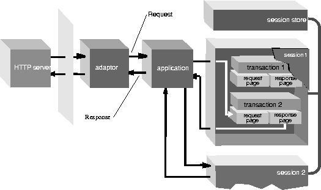

Table of Contents
Table of Contents
 Previous Section
Previous Section
Objects of many classes (most of them private) work together to compose the HTML content of response pages. Many of the same objects also set their variable values from data entered into request pages and respond to user actions. Two major branches of these objects descend from WOElement: WOComponent objects, which usually represent pages, and WODynamicElement objects, which represent dynamic HTML elements on the page (that is, elements with changeable state or the ability to trigger actions). For details on how this happens and for more on these classes, see "Component and Element".

Figure 1: The Parts of a WebObjects Application
- - WOComponent
- An object that represents a integral, reusable page (or portion of a page) for display in a web browser.
- - WOElement
- An abstract class that declares the three request-handling methods: takeValuesFromRequest:inContext:, invokeActionForRequest:inContext:, and appendToResponse:inContext:. Each node in an object graph, which represents the HTML elements of a component and their relationships, is an object that inherits from WOElement.
- - WODynamicElement
- An abstract class for subclasses that generate particular dynamic elements.
- - WOAssociation
- An object that knows how to find and set a value by reference to a key. Instance variables and action methods of dynamic elements are WOAssociations.
Table of Contents
 Next Section
Next Section